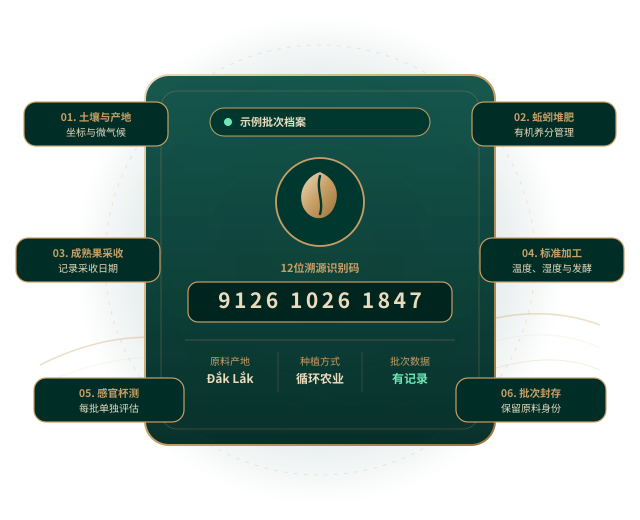
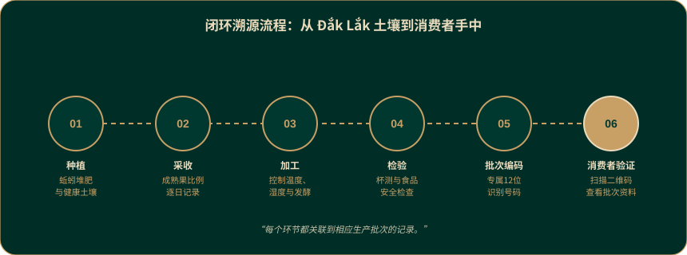

01
“纯正”与“掩盖缺陷的混合原料”之间的模糊地带
没有批次档案的咖啡或可可可能混入陈旧或有缺陷的原料；可可还可能经过碱化处理，以加深颜色并掩盖不良酸味。缺少数据支持，消费者可能支付高价，却没有得到应有的天然风味。
潜在影响：天然成分（如可可中的多酚、黄烷醇）及独特产地香气可能流失。
深入了解选择全流程可追溯农产品所带来的实际权益与价值。
在农产品、咖啡和可可市场，任何包装都可以印上“纯正”、“精品”或“农场直供”等字样。但宣传与真实品质的差别在于：您能否追溯手中这包产品从种植到加工的完整旅程？

以下批次档案仅用于展示溯源信息的呈现方式，并非已核实的真实生产记录。如需查询真实产品溯源信息，请访问SI CAFE 官方溯源平台，或在下方输入产品上的真实批次码或溯源码。
当产地信息在包装环节中断，消费者只能把健康、风味体验和预算寄托在无法核实的宣传上。
没有批次档案的咖啡或可可可能混入陈旧或有缺陷的原料；可可还可能经过碱化处理，以加深颜色并掩盖不良酸味。缺少数据支持，消费者可能支付高价，却没有得到应有的天然风味。
片面追求产量可能增加化肥和农药的使用。产品烘焙后，消费者很难仅凭外观或气味判断。若没有田间日志和土壤管理资料，“绿色农产品”便只是一句未经证实的口号。
有些生产者只在季初送检少量样品，却把结果用于宣传全年大量收购的产品。没有批次级追溯，消费者无法确认手中产品究竟来自哪次生产。
没有明确的批次编号，湿度、风味或储存质量出现变化时，就难以判断问题发生在采收、加工还是仓储环节。真正的透明意味着对每个批次负责。
溯源不只是工厂里的技术功能，更是保障消费者权益的工具，也是提升品鉴体验的方式。
您不必只依赖口耳相传或包装上的优美措辞。扫描或输入12位代码，即可查阅多乐高原种植区、采收日期、加工方式及已记录的品质参数。
Si Farm & Si Cafe 将产地透明与循环农业相结合：使用蚯蚓堆肥改善土壤，采用生物防治方法，并避免添加人工香精或通过碱化掩盖原料缺陷。
当您知道某批精品罗布斯塔咖啡的成熟果采摘比例超过95%，经过控温发酵和规范高架晾晒，便更能理解它为何具有持久回甘、黑巧克力、烤栗子和熟果的风味层次。
无论家庭咖啡爱好者、咖啡馆还是餐饮合作伙伴，原料特性突然改变都会影响成品。批次档案提供含水率、烘焙程度和加工方法等信息，便于调整配方并重现品质。
透明档案让价值构成更清楚：挑选成熟果实的人工投入、循环有机土壤管理、冻干与天然香气回收等深加工技术，以及品质检验流程。
优先选择透明产品，有助于鼓励多乐农民继续投入负责任的种植、土壤修复和蚯蚓堆肥循环系统。作为商务礼品或招待宾客时，批次溯源也体现细致与责任感。

Si Cafe & Si Farm 的每组12位代码（例如 9126 1026 1847）对应生产管理系统中的一个批次标识。点击下方数字分组查看其含义：
下表帮助您比较两种品质信息方式在消费者权益方面的核心区别。
| 评估标准 | 宣传模糊的产品 | Si Cafe & Si Farm 可溯源产品 |
|---|---|---|
| 产地证明依据 | 只在包装上笼统标注“西原特产”或“100%纯正”。 | 每批都有独立的12位识别码，可关联多乐种植区记录。 |
| 种植方式与土壤营养 | 缺少农场记录，难以评估化肥与农药使用情况。 | 公开Si Farm 蚯蚓堆肥循环农业实践，关注土壤微生物生态。 |
| 原料真实性 | 可能混入旧料、次品，或利用碱化和香精统一颜色及气味。 | 尽量少干预的天然原料，保留原有色泽、香气和批次品质记录。 |
| 品质评估数据 | 以多年前的一份检测报告代表所有在售批次。 | 按批次记录物理参数、含水率、加工过程及杯测评分。 |
| 长期使用稳定性 | 不同批次品质波动，但消费者无从了解原因。 | 借助批次资料调整冲煮配方，提升成品一致性。 |
| 包装后的责任追踪 | 售出后信息中断，出现质量变化时难以追因。 | 覆盖完整产品旅程的批次追踪，从种植区经多乐 Quảng Phú 工厂直到消费者。 |
来自消费者、咖啡冲煮专业人员与企业合作伙伴的实际问题。
防伪标签主要帮助判断包装是否属于某品牌，但不能单独说明原料产地、采收时间或加工方式。12位溯源码用于关联具体批次的种植信息、蚯蚓堆肥管理、采收记录、加工参数和感官评测结果。
这是真实农产品存在自然差异的体现。阳光、降雨、成熟度和微气候会随时间改变。独立批次档案能呈现这些差异，而不是用同一份描述概括全部产品。
许多可可粉采用碱化（荷兰式处理）使颜色变深、酸味降低，但这种工艺可能减少天然的黄烷醇与多酚。天然可可的批次记录可以展示发酵、烘焙、未碱化处理及多乐可可特有的风味资料。
可以。用手机扫描包装二维码，若链接带有对应的 ?lot=... 参数，页面会自动显示该批次；您也可以手动输入标签上的12位数字，在拆封前查看已提供的信息。